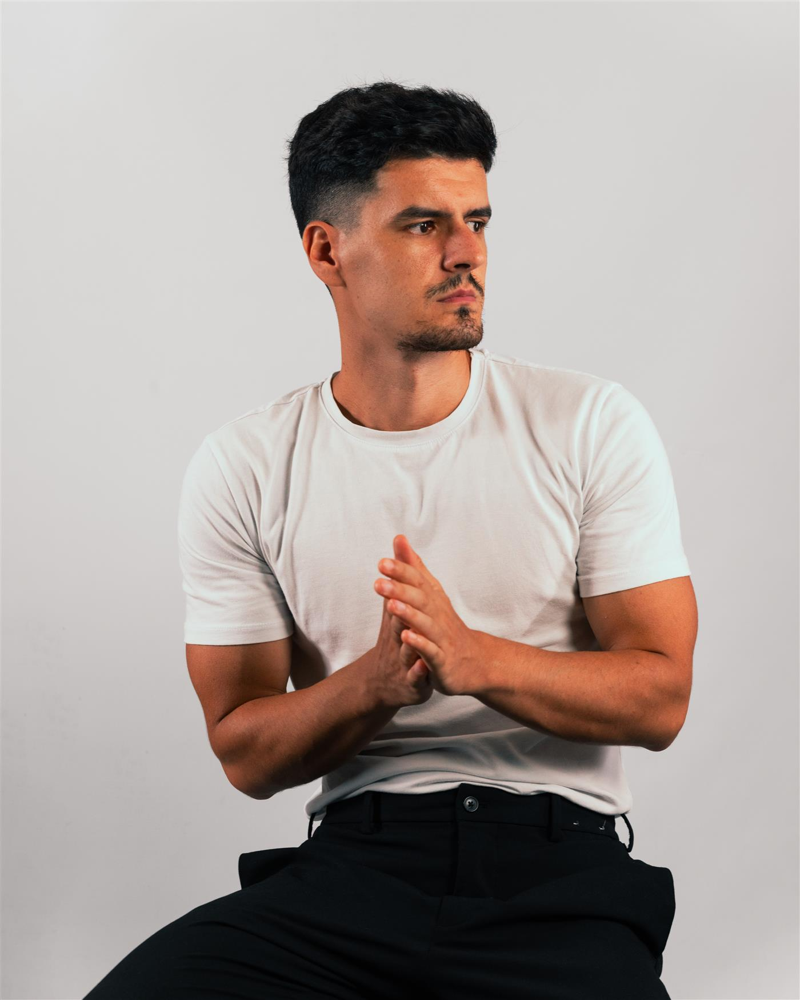

</>01 — BUILD
Développement web↗
Donner forme à vos idées avec des expériences web claires, soignées et pensées pour celles et ceux qui les utilisent.
Sites webExpérience utilisateurResponsive
Voir Le Cabanon Bleu DÉVELOPPEUR WEB & LEAD GENERATOR
Du code. Des connexions.
De nouvelles possibilités.
Je transforme la curiosité en solutions digitales.
Pour donner vie à vos idées et les connecter
aux bonnes personnes.

01 / CE QUE JE FAIS
Deux univers complémentaires, une même envie :
faire avancer vos projets.
Donner forme à vos idées avec des expériences web claires, soignées et pensées pour celles et ceux qui les utilisent.
Créer des ponts entre votre activité et vos futurs clients. Une approche ciblée pour faire émerger de nouvelles opportunités.
02 / AU-DELÀ DU CODE
J’ai toujours aimé comprendre comment les choses fonctionnent, explorer de nouvelles idées et découvrir ce que la technologie peut rendre possible.
Cette curiosité m’a naturellement conduit vers le développement web. Aujourd’hui, je mets cette passion au service des autres : concevoir des solutions utiles, donner vie à des projets et créer des connexions qui ont du sens.
Florian Husaj ↗// Un aperçu de mon univers
const florian = {
nom: "Florian Husaj",
univers: [
"Développement web",
"Lead generation"
],
moteur: "La curiosité",
approche: "L’humain d’abord",
envieDapprendre: true
};
❯ prêt pour la prochaine idée▌
03 / LA SUITE S’ÉCRIT ENSEMBLE
Un site à imaginer, une présence digitale à développer,
de nouvelles connexions à créer.
Les coordonnées de contact seront bientôt disponibles ici.